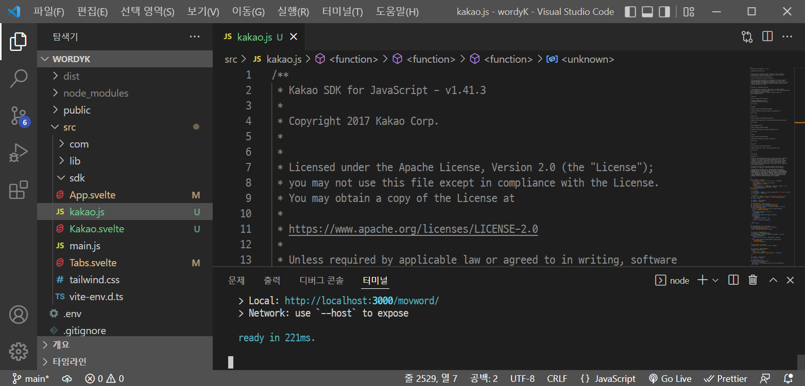

1. 카카오링크: Svelte
이 문서는 Svelte Web App(이하 Svelte)에서 Kakao SDK for JavaScript(이하 JavaScript SDK)를 사용한 카카오링크 API 구현 방법을 안내합니다.
이 문서에 포함된 기능 일부는 를 통해 사용해 볼 수 있습니다.
1.1. 시작하기 전에
-
에서 메시지 API와 메시지 종류 및 구성 방법에 대한 내용을 확인하고 선택합니다.
호출 방법은, Svelte에서 공유하기 버튼을 JavaScript SDK를 통해 추가하기 어렵기 때문에, 직접 만든 버튼을 사용하는 것으로 아래에서 안내합니다. -
에서 앱 만들기, 앱 키 발급하기, Web 플랫폼 등록 관련 내용을 확인하고 과정을 수행합니다.
1.2. Svelte 환경 설정
Svelte는 Vite, Rollup, Webpack과 같은 빌드 도구와 함께 사용되며, 이 문서에서는 Vite 플러그인 사용 기준으로 안내합니다. 각 빌드 도구의 자세한 내용은 해당 문서 사이트에서 확인할 수 있습니다.
|
|
|
1.2.1. 설치하기
-
SDK 다운로드에서 최신 버전 JavaScript SDK를 내려받습니다.
-
다운로드한 JavaScript SDK 파일(kakao.js)을 Svelte 프로젝트 폴더 내 원하는 경로에 복사합니다.
 -
카카오링크 API를 구현 할 Svelte 파일(App.svelte 또는 *.svelte)의 script 영역에 JavaScript SDK 파일을 가져오기(Import) 합니다.
<script> import "./kakao.js"; </script>
1.2.2. 초기화
설치하기를 참고하여 JavaScript SDK 파일을 Svelte 파일에 가져오기 한 후, 다음의 JavaScript SDK 초기화 함수를 호출합니다. JAVASCRIPT_KEY에 에서 확인한 JavaScript 키를 할당해야 합니다.
<script>
Kakao.init("JAVASCRIPT_KEY");
Kakao.isInitialized();
</script>다음은 초기화 함수를 호출하고, 이어서 초기화가 잘 되었는지 확인하는 함수를 호출하는 예제입니다.
<script>
import "./kakao.js";
// SDK를 초기화 합니다. 사용할 앱의 JavaScript 키를 설정해 주세요.
Kakao.init("JAVASCRIPT_KEY");
// SDK 초기화 여부를 표시합니다.
console.log(Kakao.isInitialized());
</script>필요한 경우 onMount 함수를 사용하여 컴포넌트가 DOM에 렌더링 될 때 호출할 수도 있습니다. 아래 예제를 참고합니다.
<script>
import { onMount } from "svelte";
import "./kakao.js";
onMount(() => {
Kakao.init("JAVASCRIPT_KEY");
console.log(Kakao.isInitialized());
});
</script>JavaScript SDK가 정상적으로 초기화된 상태라면, 해당 웹 페이지 실행 시 개발자 도구 콘솔에 true가 출력됩니다. false가 출력됐다면 초기화에 사용한 JavaScript 키 값이 올바른지 확인합니다.